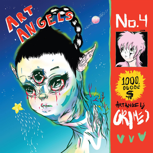

DISCOGRAFIA
HALFAXA
Halfaxa es el segundo álbum de estudio delartista de música electrónica Grimes. Fue lanzado en Canadá
el 5 de octubre de 2010 por Arbutus Records , y en el Reino Unido y Europa continental en mayo de 2011
por Lo Recordings
Halfaxa ha sido descrito como un lanzamiento de goth-pop , witch house , dark wave y glo-fi,
además de incluir influencias de glitch pop , R&B , techno , industrial y electro . Grimes ha dicho que Halfaxa
fue creado para "evocar el sentimiento de creer en Dios de una manera muy cristiana medieval ", y lo ha descrito
como su álbum " medieval ".
CANCIONES
- 1.Outer
- 2.Intor / Flowers
- 3.Weregild
- 4.∆∆∆∆Rasik∆∆∆∆
- 5.Heartbeats
- 6.Sagrad Прекрасный
- 7.Dragvandil
- 8.Devon
- 9.Dream Fortress
- 10.World ♡ Princess
- 11.† River †
- 12.≈Ω≈Ω≈Ω≈Ω≈Ω≈Ω≈Ω≈Ω≈
GEIDI PRIMES
Geidi Primes es el álbum de estudio debut del artista canadiense Grimes, lanzado el 10 de enero de 2010
por Arbutus Records. En 2011, el álbum fue lanzado en el Reino Unido por No Pain in Pop Records en CD y LP,
que contiene una portada ligeramente diferente. Geidi Primes es un álbum conceptual basado en la novela
Dune de Frank Herbert y adaptación cinematográfica de 1984 de David Lynch del libro.
CANCIONES
- 1.Caladan
- 2.Sardaukar Levenbrech
- 3.Zoal, Face Dancer
- 4.Rosa
- 5.Avi
- 6.Feyd Rautha Dark Heart
- 7.Gambang
- 8.Venus in Fleurs
- 9.Grisgris
- 10,Shadout Mapes
- 11.Beast Infection
VISIONS

Visions es el tercer álbum de estudio de la cantante y compositora canadiense Grimes, lanzado el 31 de enero de 2012.
El primero desde que firmó con 4AD,6 el álbum se grabó completamente en el software Apple GarageBand en el
departamento de Grimes durante un período de tres semanas.78 Fue mezclado por Grimes y su mánager Sebastian Cowan
en su La Brique Studio Space.9 Visions se transmitió en el NPR sitio web una semana antes de su lanzamiento en
los Estados Unidos.
El álbum recibió elogios de los críticos por su lanzamiento y fue incluido en varias listas de fin de año.
Los dos singles del álbum, "Oblivion" y "Genesis", fueron nombrados una de las mejores canciones de 2012 por
muchas publicaciones, entre ellas Rolling Stone, Pitchfork y NME.
CANCIONES
- 1.Infinite Love Without Fulfillment
- 2.Genesis
- 3.Oblivion
- 4.Eight
- 5.Circumambient
- 6.Vowels = Space and Time
- 7.Visiting Statue
- 8.Be a Body (侘寂)
- 9.Colour of Moonlight
- 10.Symphonia IX
- 11.Nightmusic
- 12.Skin
- 13.Know the Way (Outro)
ART ANGELS

Art Angels es el cuarto álbum de estudio de Grimes. Fue lanzado digitalmente el 6 de noviembre de 2015 por 4AD,
y en formatos físicos el 11 de diciembre.
Se ha descrito que "Art Angels" es más accesible que los álbumes anteriores de Boucher, al tiempo que conserva
sus influencias experimentales. El álbum fue lanzado con gran éxito de crítica y varias publicaciones lo
clasificaron como uno de los mejores álbumes de 2015.
CANCIONES
- 1.laughing and not being normal
- 2.California
- 3.SCREAM
- 4.Flesh without Blood
- 5.Belly of the Beat
- 6.Kill V. Maim
- 7.Artangels
- 8.Easily
- 9.Pin
- 10.REALiTi
- 11.World Princess, Pt. II
- 12.Venus Fly
- 13.Life in the Vivid Dream
- 14.Butterfly
Miss Anthropocene
Miss Anthropocene (originalmente anunciado y estilizado como Miss_Anthrop0cene) es el quinto álbum de estudio
de la música canadiense Grimes, que fue lanzado el 21 de febrero de 2020.
El álbum es un álbum conceptual suelto sobre una "antropomórfica diosa del cambio climático" inspirada en la
mitología romana11 y villanía de dicha mitología.
Sónicamente, el álbum es una salida del álbum de Grimes Art Angels, Miss Anthropocene es principalmente de
un estilo más oscuro que contiene inspiración de los sonidos de nu metal y ethereal wave en comparación
con Art Angels que tiene sonidos más brillantes y optimistas.
CANCIONES
- 1.So Heavy I Fell Through the Earth
- 2.Darkseid
- 3.Delete Forever
- 4.Violence ft i_o
- 5.4ÆM
- 6.New Gods
- 7.My Name Is Dark
- 8.You'll miss me when I'm not around
- 9.Before the fever
- 10.IDORU
- 11.We Appreciate Power